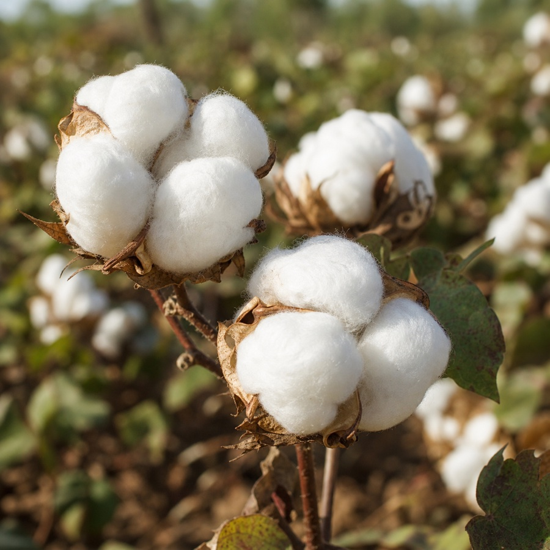
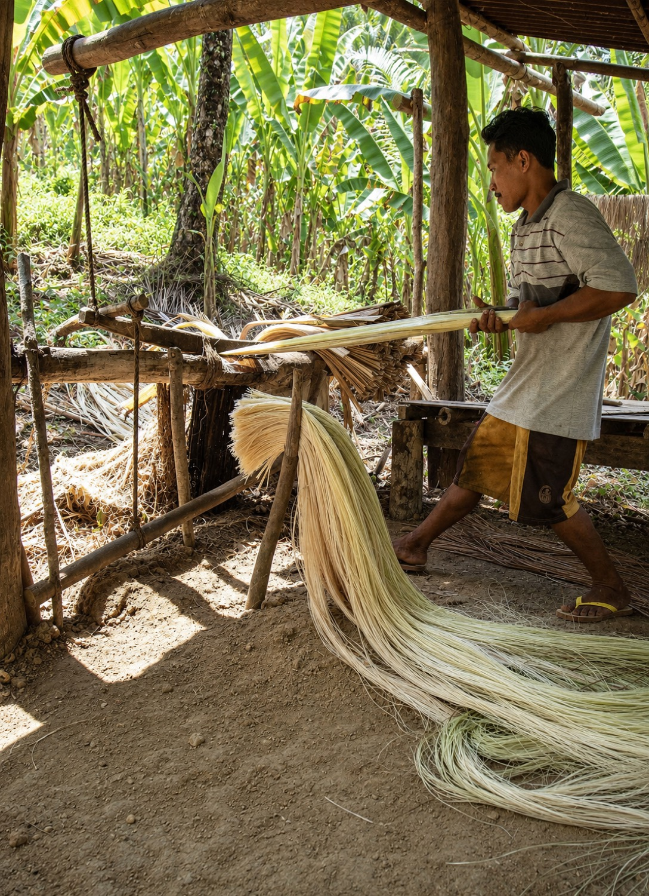
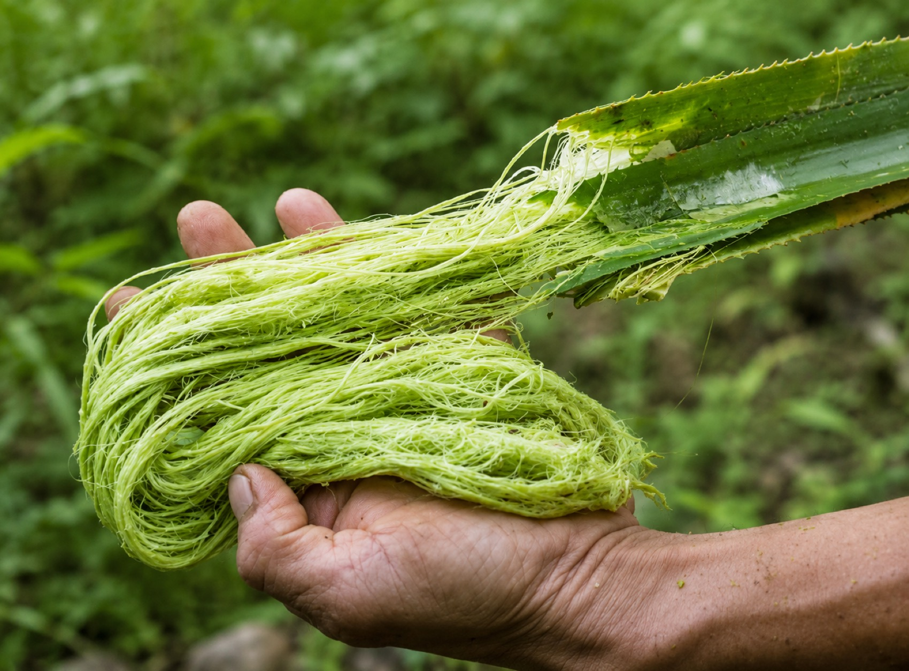

Cotton Textile
1,797 L
Approx. water for a 180 g textile product.
Beyond Cotton
Who We Are
Origin Fabric Studio is a material-focused textile brand exploring new sources beyond cotton.
We look at where fabric begins: in plants, in fibers, in agricultural by-products, and in the hidden stories behind materials.
Who We Are
Origin Fabric Studio explores the beginning of textiles.
Before a fabric becomes a surface, it has a source. It may begin in a plant, a leaf, a stem, a fruit by-product or a fiber system.
We are here to rethink what textiles can begin with.
What We Do
Some materials begin as crops. Some begin as waste that already exists. Our aim is to turn these hidden sources into clear and useful material stories.
Why We Exist
Cotton is one of the most common textile fibers in the world. It is used in T-shirts, shirts, denim, home textiles and many everyday fabrics.
But cotton production can also be connected to high water demand, farming pressure, chemicals and wastewater. That is why material choice matters.
The Water Behind Cotton
A T-shirt is not only a product. It is also a material journey.
Small Fiber Comparison

Approx. water for a 180 g textile product.

Approx. water for a 180 g textile product.

Marginal process water in a by-product system.
Pineapple leaf fiber is made from leaves left after pineapple fruit production. This number is based on marginal process water in a by-product system, so it should not be read as a direct one-to-one cotton replacement claim.
There is no single perfect fiber. But there are better questions.
Featured Project
A biofiber-based curtain concept designed for schools in cotton-producing regions facing water stress.
The curtain works as both a shade system and a learning surface.
A daily classroom object becomes a quiet lesson about water, materials and choices.
Project Idea
This project begins in cotton-growing regions where water stress is part of everyday life.
In some places, large amounts of water are used for cotton farming while local communities still struggle to access clean water.
Origin Fabric Studio responds through a classroom curtain: a useful gift for schools and a quiet learning surface that introduces children to biofibers grown around their own region.
What We Explore
Made from leaves left after pineapple fruit production.
It can be explored for leather-like surfaces, bags, shoes, accessories and textile samples.
A leaf becomes a fiber.A plant-based fiber known for lower water demand compared to cotton in comparative studies.
It can be explored for T-shirts, shirts, trousers, jackets, bags and home textiles.
A crop becomes a durable textile.Made from citrus by-products left after juice production.
They can be explored for lightweight fabrics, soft textile surfaces, scarves, shirts and fashion textiles.
Fruit waste becomes a textile source.What Can Biofibers Become?
T-shirts, shirts, jackets, trousers
Bags, shoes, wallets, cases
Leather alternatives, textile samples, nonwoven sheets
Curtains, panels, upholstery and soft surfaces
Our Approach
We do not believe in one miracle fiber.
A material is not better only because it is natural.
Its impact depends on where it comes from, how much water it needs, how it is processed, and what it becomes.
Origin Fabric Studio looks at materials with curiosity and honesty.
Our Mission
We explore biofiber sources that can offer alternatives to cotton. We look at plant-based fibers, agricultural by-products and new textile surfaces.
Some materials begin from crops. Some begin from waste that already exists.